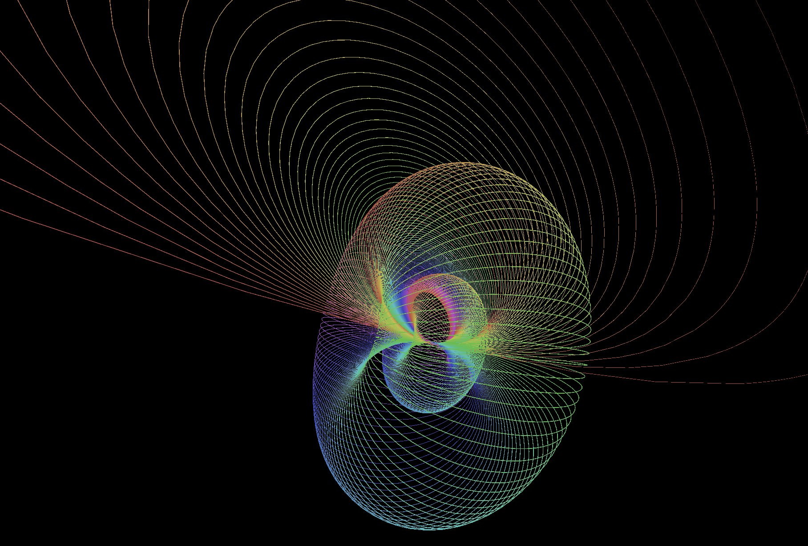
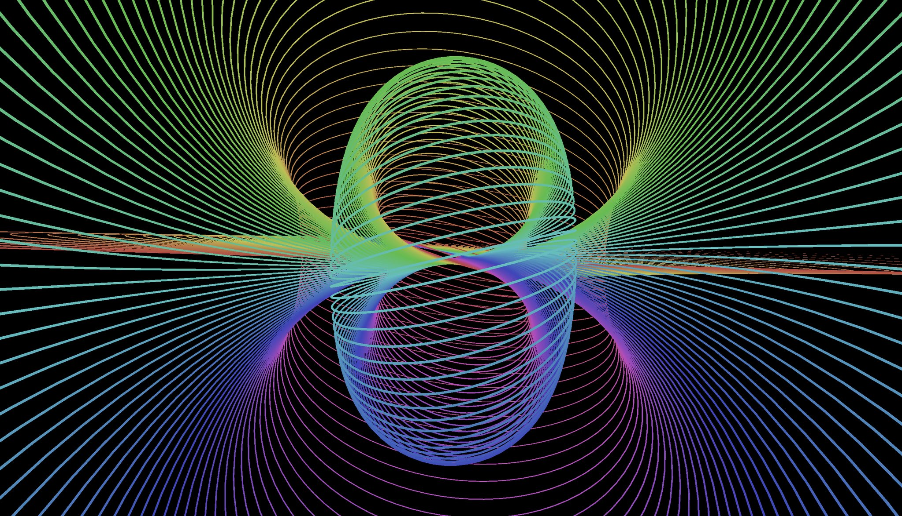

Abstract
This article defines the Hopf Fibration (HF), the concept of splitting the $S^3$ sphere onto the twisted cartesian product of spheres $S^1$ and $S^2$. Basic HF applications are: 1) HF is a Fiber Bundle structure of Dirac Monopole; 2) HF is a map from the $S^3$ in H to the Bloch sphere; 3) If HF is a vector field in $R^3$ then there exists a solution to compressible non-viscous Navier-Stokes equations. It was figured out that there are only 4 dimensions of fibers with Hopf invariant 1, namely $S^0$, $S^1$, $S^3$, $S^7$.
This article consists of two parts: 1) geometric visualization of projection of $S^3$ to $S^2$ (frontend); 2) formal topological version of HF in cubical type theory (backend). Consider this a basic intro and a summary of results or companion guide to the chapter 8.5 from HoTT.
Geometry
Let's imagine $S^3$ as smooth differentiable manifold and build a projection onto the display as if demoscene is still alive.
Equations
Definition (Sphere $S^3$). Like a little baby in $\mathbb{R}^4$: $$ S^3 = \{ (x_0,x_1,x_2,x_3) \in \mathbb{R}^4 : \sum_{i=0}^3 x_i^2 = 1 \}; $$
after math classes in quaternions $\mathbb{H}$: $$ S^3 = \{ x \in \mathbb{H} : \|x\| = 1 \}. $$
Definition (Locus). The $S^3$ is realized as a disjoint union of circular fibers in Hopf coordinates $(\eta,\theta_1,\theta_2)$: $$ \begin{equation} x_0 = cos(\theta_1)sin(\eta), \\ x_1 = sin(\theta_1)sin(\eta), \\ x_2 = cos(\theta_2)cos(\eta), \\ x_3 = sin(\theta_2)cos(\eta). \end{equation} $$ Where $\eta \in [0,\frac{\pi}{2}]$ and $\theta_{1,2} \in [0,2\pi]$.

Definition (Mapping on $S^2$). A mapping of the Locus to the $S^2$ has points on the circles parametrized by $\theta_2$: $$ \begin{equation} x = sin(2\eta)cos(\theta_1), \\ y = sin(2\eta)sin(\theta_1), \\ z = cos(2\eta).\end{equation} $$

Code in three.js:
var fiber = new THREE.Curve(),
color = sphericalCoords.color;
fiber.getPoint = function(t) {
var eta = sphericalCoords.eta,
phi = sphericalCoords.phi,
theta = 2 * Math.PI * t;
var x1 = Math.cos(phi+theta) * Math.sin(eta/2),
x2 = Math.sin(phi+theta) * Math.sin(eta/2),
x3 = Math.cos(phi-theta) * Math.cos(eta/2),
x4 = Math.sin(phi-theta) * Math.cos(eta/2);
var m = mag([x1,x2,x3]),
r = Math.sqrt((1-x4)/(1+x4));
return new THREE.Vector3(r*x1/m,r*x2/m, r*x3/m);
};
Topology
Can we reason about spheres without a metric? Yes! But can we do this in a constructive way? Also yes.
Fiber
Definition (Fiber). The fiber of the map $p: E \rightarrow B$ in a point $y: B$ is all points $x: E$ such that $p(x)=y$.
fiber (E B: U) (p: E -> B) (y: B): U
= (x: E) * Path B y (p x)
Fiber Bundle
Definition (Fiber Bundle). The fiber bundle $ F \rightarrow E \mapright{p} B$ on a total space $E$ with fiber layer $F$ and base $B$ is a structure $(F,E,p,B)$ where $p: E \rightarrow B$ is a surjective map with following property: for any point $y: B$ exists a neighborhood $U_b$ for which a homeomorphism $f: p^{-1}(U_b) \rightarrow U_b \times F$ making the following diagram commute.
Trivial Fiber Bundle
Definition (Trivial Fiber Bundle). When total space $E$ is cartesian product $\Sigma(B,F)$ and $p = pr_1$ then such bundle is called trivial $(F,\Sigma(B,F),pr_1,B)$.
Family (B: U): U = B -> U
total (B: U) (F: Family B): U = Sigma B F
trivial (B: U) (F: Family B): total B F -> B
= \ (x: total B F) -> x.1Theorem (Fiber Bundle is a Type Family). Inverse image (fiber) of fiber bundle $(F,B*F,pr_1,B)$ in point $y:B$ equals $F(y)$.
FiberPi (B: U) (F: B -> U) (y: B)
: Path U (fiber (total B F) B (trivial B F) y) (F y)Definition (Structure Group). The structure group of an $F$-fiber bundle is just Aut(F), the loop space of BAut(F).
Higher Spheres
Definition (2-points, Bool, Sphere $S^0$).
data bool = false | true
Definition (Suspension).
data susp (A: U)
= north
| south
| merid (a: A) <i> [ (i = 0) -> north,
(i = 1) -> south ]Definition (Sphere $S^1$). Direct definition.
data S1
= base
| loop <i> [ (i = 0) -> base,
(i = 1) -> base ]
Definition (Sphere $S^n$). Recursive definition.
S: nat -> U = split
zero -> bool
succ x -> susp (S x)
S2: U = susp S1
S3: U = susp S2
S4: U = susp S3
Hopf Fibrations
Theorem (Hopf Fibrations). There are fiber bundles: $$ \mathbb{R} : (S^0,S^1,p,S^1), \\ \mathbb{C} : (S^1,S^3,p,S^2), \\ \mathbb{H} : (S^3,S^7,p,S^4), \\ \mathbb{O} : (S^7,S^{15},p,S^8). $$
Definition (H-space). H-space over a carrier $A$ is a tuple $$ H_A= \begin{cases} A : U\\ e : A\\ \mu : A \rightarrow A \rightarrow A\\ \beta : (a:A) \rightarrow \mu(e,a)=\mu(a,e)=a \end{cases} $$.
Example ($S^1$ Hopf Fiber $\mathbb{R}$). Mobius fiber. In cubicaltt type checker.
moebius : S1 -> U = split
base -> bool
loop @ i -> ua bool bool negBoolEquiv @ i
H0 : U = (c : S1) * moebius cExample ($S^3$ Hopf Fiber $\mathbb{C}$). Guillaume Brunerie. In cubicaltt type checker.
rot: (x : S1) -> Path S1 x x = split
base -> loop1
loop @ i -> constSquare S1 base loop1 @ i
mu : S1 -> equiv S1 S1 = split
base -> idEquiv S1
loop @ i -> equivPath S1 S1 (idEquiv S1)
(idEquiv S1) ( \(x : S1) -> rot x @ j) @ i
H : S2 -> U = split
north -> S1
south -> S1
merid x @ i -> ua S1 S1 (mu x) @ i
total : U = (c : S2) * H c Example ($S^7$ Hopf Fiber $\mathbb{H}$). By Egbert Rijke and Ulrik Buchholtz. In Lean prover.
definition pfiber_quaternionic_phopf
: pfiber quaternionic_phopf ≃* S* 3 :=
begin
fapply pequiv_of_equiv,
{ esimp, unfold [quaternionic_hopf],
refine fiber.equiv_precompose
(sigma.pr1 ◦ (hopf.total (S 3))−1e)
(join.spheres (of_nat 3) (of_nat 3)) − 1 e _ ·e _,
refine fiber.equiv_precompose _ (hopf.total (S 3))− 1 e _ ·e _,
apply fiber_pr1 },
{ reflexivity }
endDefinition (Hopf Invariant). Let $\phi: S^{2n-1} \rightarrow S^{n}$ a continuous map. Then homotopy pushout (cofiber) of $\phi$ is $cofib(\phi) = S^{n} \bigcup_\phi \mathbb{D}^{2n}$ has ordinary cohomology $$ H^{k}(cofib(\phi),\mathbb{Z})= \begin{cases} \mathbb{Z}\ for\ k=n,2n \\[2ex] 0\ otherwise \end{cases} $$.
Hence for $\alpha,\beta$ generators of the cohomology groups in degree $n$ and $2n$, respectively, there exists an integer $h(\phi)$ that expresses the cup product square of $\alpha$ as a multiple of $\beta$ — $\alpha\sqcup\alpha=h(\phi)\cdot\beta$. This integer $h(\phi)$ is called Hopf invariant of $\phi$.
Theorem (Adams, Atiyah). Hopf Fibrations are only maps that have Hopf invariant $1$.
Literature
[1]. Ulrik Buchholtz, Egbert Rijke. The Cayley-Dickson Construction in Homotopy Type Theory